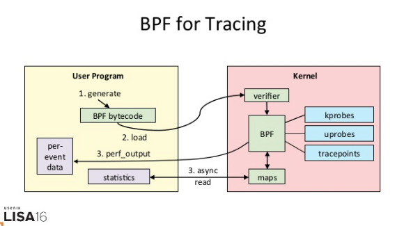
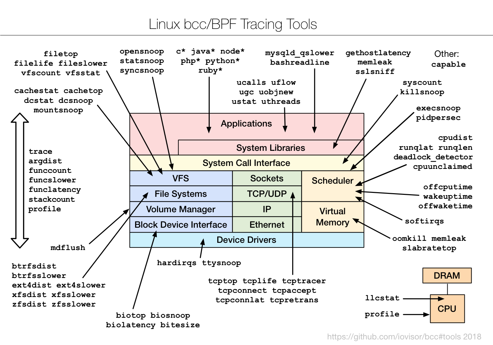
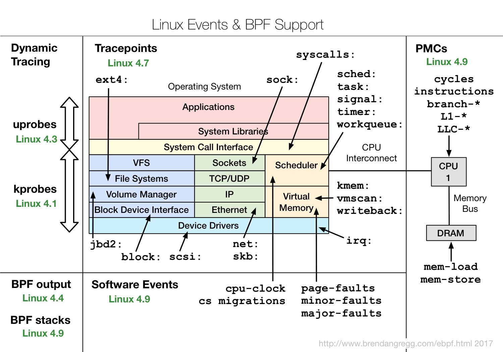
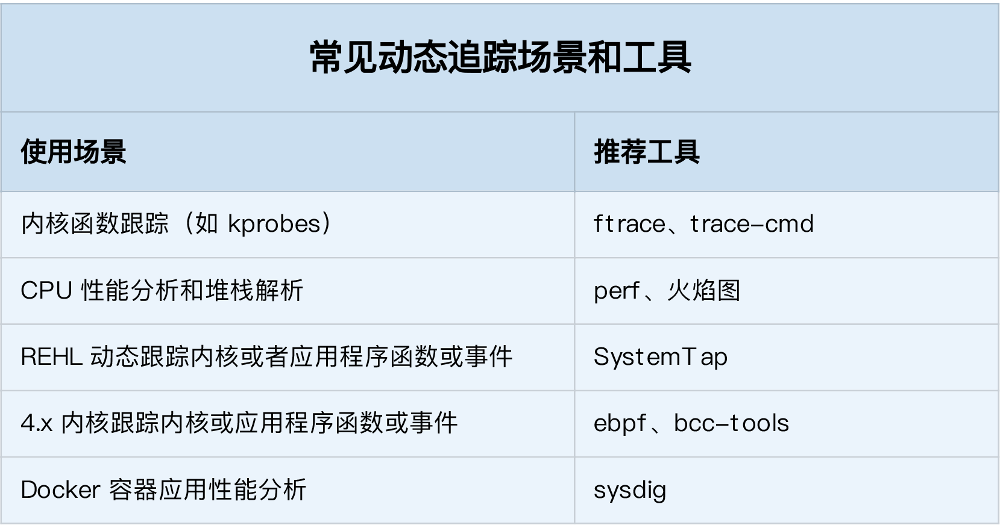

- 00 开篇词 别再让Linux性能问题成为你的绊脚石.md
- 01 如何学习Linux性能优化？.md
- 02 基础篇：到底应该怎么理解“平均负载”？.md
- 03 基础篇：经常说的 CPU 上下文切换是什么意思？（上）.md
- 04 基础篇：经常说的 CPU 上下文切换是什么意思？（下）.md
- 05 基础篇：某个应用的CPU使用率居然达到100%，我该怎么办？.md
- 06 案例篇：系统的 CPU 使用率很高，但为啥却找不到高 CPU 的应用？.md
- 07 案例篇：系统中出现大量不可中断进程和僵尸进程怎么办？（上）.md
- 08 案例篇：系统中出现大量不可中断进程和僵尸进程怎么办？（下）.md
- 09 基础篇：怎么理解Linux软中断？.md
- 10 案例篇：系统的软中断CPU使用率升高，我该怎么办？.md
- 11 套路篇：如何迅速分析出系统CPU的瓶颈在哪里？.md
- 12 套路篇：CPU 性能优化的几个思路.md
- 13 答疑（一）：无法模拟出 RES 中断的问题，怎么办？.md
- 14 答疑（二）：如何用perf工具分析Java程序？.md
- 15 基础篇：Linux内存是怎么工作的？.md
- 16 基础篇：怎么理解内存中的Buffer和Cache？.md
- 17 案例篇：如何利用系统缓存优化程序的运行效率？.md
- 18 案例篇：内存泄漏了，我该如何定位和处理？.md
- 19 案例篇：为什么系统的Swap变高了（上）.md
- 20 案例篇：为什么系统的Swap变高了？（下）.md
- 21 套路篇：如何“快准狠”找到系统内存的问题？.md
- 22 答疑（三）：文件系统与磁盘的区别是什么？.md
- 23 基础篇：Linux 文件系统是怎么工作的？.md
- 24 基础篇：Linux 磁盘I_O是怎么工作的（上）.md
- 25 基础篇：Linux 磁盘I_O是怎么工作的（下）.md
- 26 案例篇：如何找出狂打日志的“内鬼”？.md
- 27 案例篇：为什么我的磁盘I_O延迟很高？.md
- 28 案例篇：一个SQL查询要15秒，这是怎么回事？.md
- 29 案例篇：Redis响应严重延迟，如何解决？.md
- 30 套路篇：如何迅速分析出系统I_O的瓶颈在哪里？.md
- 31 套路篇：磁盘 I_O 性能优化的几个思路.md
- 32 答疑（四）：阻塞、非阻塞 I_O 与同步、异步 I_O 的区别和联系.md
- 33 关于 Linux 网络，你必须知道这些（上）.md
- 34 关于 Linux 网络，你必须知道这些（下）.md
- 35 基础篇：C10K 和 C1000K 回顾.md
- 36 套路篇：怎么评估系统的网络性能？.md
- 37 案例篇：DNS 解析时快时慢，我该怎么办？.md
- 38 案例篇：怎么使用 tcpdump 和 Wireshark 分析网络流量？.md
- 39 案例篇：怎么缓解 DDoS 攻击带来的性能下降问题？.md
- 40 案例篇：网络请求延迟变大了，我该怎么办？.md
- 41 案例篇：如何优化 NAT 性能？（上）.md
- 42 案例篇：如何优化 NAT 性能？（下）.md
- 43 套路篇：网络性能优化的几个思路（上）.md
- 44 套路篇：网络性能优化的几个思路（下）.md
- 45 答疑（五）：网络收发过程中，缓冲区位置在哪里？.md
- 46 案例篇：为什么应用容器化后，启动慢了很多？.md
- 47 案例篇：服务器总是时不时丢包，我该怎么办？（上）.md
- 48 案例篇：服务器总是时不时丢包，我该怎么办？（下）.md
- 49 案例篇：内核线程 CPU 利用率太高，我该怎么办？.md
- 50 案例篇：动态追踪怎么用？（上）.md
- 51 案例篇：动态追踪怎么用？（下）.md
- 52 案例篇：服务吞吐量下降很厉害，怎么分析？.md
- 53 套路篇：系统监控的综合思路.md
- 54 套路篇：应用监控的一般思路.md
- 55 套路篇：分析性能问题的一般步骤.md
- 56 套路篇：优化性能问题的一般方法.md
- 57 套路篇：Linux 性能工具速查.md
- 58 答疑（六）：容器冷启动如何性能分析？.md
- 加餐（一） 书单推荐：性能优化和Linux 系统原理.md
- 加餐（二） 书单推荐：网络原理和 Linux 内核实现.md
- 用户故事 “半路出家 ”，也要顺利拿下性能优化！.md
- 用户故事 运维和开发工程师们怎么说？.md
- 结束语 愿你攻克性能难关.md
51 案例篇：动态追踪怎么用？（下）
你好，我是倪朋飞。
上一节，我带你一起学习了常见的动态追踪方法。所谓动态追踪，就是在系统或者应用程序正常运行的时候，通过内核中提供的探针，来动态追踪它们的行为，从而辅助排查出性能问题的瓶颈。
使用动态追踪，可以在不修改代码、不重启服务的情况下，动态了解应用程序或者内核的行为，这对排查线上问题、特别是不容易重现的问题尤其有效。
在 Linux 系统中，常见的动态追踪方法包括 ftrace、perf、eBPF 以及 SystemTap 等。上节课，我们具体学习了 ftrace 的使用方法。今天，我们再来一起看看其他几种方法。
perf
perf 已经是我们的老朋友了。在前面的案例中，我们多次用到它，来查找应用程序或者内核中的热点函数，从而定位性能瓶颈。而在内核线程 CPU 高的案例中，我们还使用火焰图动态展示 perf 的事件记录，从而更直观地发现了问题。
不过，我们前面使用 perf record/top时，都是先对事件进行采样，然后再根据采样数，评估各个函数的调用频率。实际上，perf 的功能远不止于此。比如，
perf 可以用来分析 CPU cache、CPU 迁移、分支预测、指令周期等各种硬件事件；
perf 也可以只对感兴趣的事件进行动态追踪。
接下来，我们还是以内核函数 do_sys_open，以及用户空间函数 readline 为例，看一看 perf 动态追踪的使用方法。
同 ftrace 一样，你也可以通过 perf list ，查询所有支持的事件：
$ perf list
然后，在 perf 的各个子命令中添加 –event 选项，设置追踪感兴趣的事件。如果这些预定义的事件不满足实际需要，你还可以使用 perf probe 来动态添加。而且，除了追踪内核事件外，perf 还可以用来跟踪用户空间的函数。
我们先来看第一个 perf 示例，内核函数 do_sys_open 的例子。你可以执行 perf probe 命令，添加 do_sys_open 探针：
$ perf probe --add do_sys_open
Added new event:
probe:do_sys_open (on do_sys_open)
You can now use it in all perf tools, such as:
perf record -e probe:do_sys_open -aR sleep 1
探针添加成功后，就可以在所有的 perf 子命令中使用。比如，上述输出就是一个 perf record 的示例，执行它就可以对 10s 内的 do_sys_open 进行采样：
$ perf record -e probe:do_sys_open -aR sleep 10
[ perf record: Woken up 1 times to write data ]
[ perf record: Captured and wrote 0.148 MB perf.data (19 samples) ]
而采样成功后，就可以执行 perf script ，来查看采样结果了：
$ perf script
perf 12886 [000] 89565.879875: probe:do_sys_open: (ffffffffa807b290)
sleep 12889 [000] 89565.880362: probe:do_sys_open: (ffffffffa807b290)
sleep 12889 [000] 89565.880382: probe:do_sys_open: (ffffffffa807b290)
sleep 12889 [000] 89565.880635: probe:do_sys_open: (ffffffffa807b290)
sleep 12889 [000] 89565.880669: probe:do_sys_open: (ffffffffa807b290)
输出中，同样也列出了调用 do_sys_open 的任务名称、进程 PID 以及运行的 CPU 等信息。不过，对于 open 系统调用来说，只知道它被调用了并不够，我们需要知道的是，进程到底在打开哪些文件。所以，实际应用中，我们还希望追踪时能显示这些函数的参数。
对于内核函数来说，你当然可以去查看内核源码，找出它的所有参数。不过还有更简单的方法，那就是直接从调试符号表中查询。执行下面的命令，你就可以知道 do_sys_open 的所有参数：
$ perf probe -V do_sys_open
Available variables at do_sys_open
@<do_sys_open+0>
char* filename
int dfd
int flags
struct open_flags op
umode_t mode
从这儿可以看出，我们关心的文件路径，就是第一个字符指针参数（也就是字符串），参数名称为 filename。如果这个命令执行失败，就说明调试符号表还没有安装。那么，你可以执行下面的命令，安装调试信息后重试：
# Ubuntu
$ apt-get install linux-image-`uname -r`-dbgsym
# CentOS
$ yum --enablerepo=base-debuginfo install -y kernel-debuginfo-$(uname -r)
找出参数名称和类型后，就可以把参数加到探针中了。不过由于我们已经添加过同名探针，所以在这次添加前，需要先把旧探针给删掉：
# 先删除旧的探针
perf probe --del probe:do_sys_open
# 添加带参数的探针
$ perf probe --add 'do_sys_open filename:string'
Added new event:
probe:do_sys_open (on do_sys_open with filename:string)
You can now use it in all perf tools, such as:
perf record -e probe:do_sys_open -aR sleep 1
新的探针添加后，重新执行 record 和 script 子命令，采样并查看记录：
# 重新采样记录
$ perf record -e probe:do_sys_open -aR ls
# 查看结果
$ perf script
perf 13593 [000] 91846.053622: probe:do_sys_open: (ffffffffa807b290) filename_string="/proc/13596/status"
ls 13596 [000] 91846.053995: probe:do_sys_open: (ffffffffa807b290) filename_string="/etc/ld.so.cache"
ls 13596 [000] 91846.054011: probe:do_sys_open: (ffffffffa807b290) filename_string="/lib/x86_64-linux-gnu/libselinux.so.1"
ls 13596 [000] 91846.054066: probe:do_sys_open: (ffffffffa807b290) filename_string="/lib/x86_64-linux-gnu/libc.so.6”
...
# 使用完成后不要忘记删除探针
$ perf probe --del probe:do_sys_open
现在，你就可以看到每次调用 open 时打开的文件了。不过，这个结果是不是看着很熟悉呢？
其实，在我们使用 strace 跟踪进程的系统调用时，也经常会看到这些动态库的影子。比如，使用 strace 跟踪 ls 时，你可以得到下面的结果：
$ strace ls
...
access("/etc/ld.so.nohwcap", F_OK) = -1 ENOENT (No such file or directory)
access("/etc/ld.so.preload", R_OK) = -1 ENOENT (No such file or directory)
openat(AT_FDCWD, "/etc/ld.so.cache", O_RDONLY|O_CLOEXEC) = 3
...
access("/etc/ld.so.nohwcap", F_OK) = -1 ENOENT (No such file or directory)
openat(AT_FDCWD, "/lib/x86_64-linux-gnu/libselinux.so.1", O_RDONLY|O_CLOEXEC) = 3
...
你估计在想，既然strace 也能得到类似结果，本身又容易操作，为什么我们还要用perf 呢？
实际上，很多人只看到了 strace 简单易用的好处，却忽略了它对进程性能带来的影响。从原理上来说，strace 基于系统调用 ptrace 实现，这就带来了两个问题。
由于ptrace 是系统调用，就需要在内核态和用户态切换。当事件数量比较多时，繁忙的切换必然会影响原有服务的性能；
ptrace 需要借助 SIGSTOP 信号挂起目标进程。这种信号控制和进程挂起，会影响目标进程的行为。
所以，在性能敏感的应用（比如数据库）中，我并不推荐你用 strace （或者其他基于 ptrace 的性能工具）去排查和调试。
在 strace 的启发下，结合内核中的 utrace 机制， perf 也提供了一个 trace 子命令，是取代 strace 的首选工具。相对于 ptrace 机制来说，perf trace 基于内核事件，自然要比进程跟踪的性能好很多。
perf trace 的使用方法如下所示，跟 strace 其实很像：
$ perf trace ls
? ( ): ls/14234 ... [continued]: execve()) = 0
0.177 ( 0.013 ms): ls/14234 brk( ) = 0x555d96be7000
0.224 ( 0.014 ms): ls/14234 access(filename: 0xad98082 ) = -1 ENOENT No such file or directory
0.248 ( 0.009 ms): ls/14234 access(filename: 0xad9add0, mode: R ) = -1 ENOENT No such file or directory
0.267 ( 0.012 ms): ls/14234 openat(dfd: CWD, filename: 0xad98428, flags: CLOEXEC ) = 3
0.288 ( 0.009 ms): ls/14234 fstat(fd: 3</usr/lib/locale/C.UTF-8/LC_NAME>, statbuf: 0x7ffd2015f230 ) = 0
0.305 ( 0.011 ms): ls/14234 mmap(len: 45560, prot: READ, flags: PRIVATE, fd: 3 ) = 0x7efe0af92000
0.324 Dockerfile test.sh
( 0.008 ms): ls/14234 close(fd: 3</usr/lib/locale/C.UTF-8/LC_NAME> ) = 0
...
不过，perf trace 还可以进行系统级的系统调用跟踪（即跟踪所有进程），而 strace 只能跟踪特定的进程。
第二个 perf 的例子是用户空间的库函数。以 bash 调用的库函数 readline 为例，使用类似的方法，可以跟踪库函数的调用（基于 uprobes）。
readline 的作用，是从终端中读取用户输入，并把这些数据返回调用方。所以，跟 open 系统调用不同的是，我们更关注 readline 的调用结果。
我们执行下面的命令，通过 -x 指定 bash 二进制文件的路径，就可以动态跟踪库函数。这其实就是跟踪了所有用户在 bash 中执行的命令：
# 为/bin/bash添加readline探针
$ perf probe -x /bin/bash 'readline%return +0($retval):string’
# 采样记录
$ perf record -e probe_bash:readline__return -aR sleep 5
# 查看结果
$ perf script
bash 13348 [000] 93939.142576: probe_bash:readline__return: (5626ffac1610 <- 5626ffa46739) arg1="ls"
# 跟踪完成后删除探针
$ perf probe --del probe_bash:readline__return
当然，如果你不确定探针格式，也可以通过下面的命令，查询所有支持的函数和函数参数：
# 查询所有的函数
$ perf probe -x /bin/bash —funcs
# 查询函数的参数
$ perf probe -x /bin/bash -V readline
Available variables at readline
@<readline+0>
char* prompt
跟内核函数类似，如果你想要查看普通应用的函数名称和参数，那么在应用程序的二进制文件中，同样需要包含调试信息。
eBPF 和 BCC
ftrace 和 perf 的功能已经比较丰富了，不过，它们有一个共同的缺陷，那就是不够灵活，没法像 DTrace 那样通过脚本自由扩展。
而 eBPF 就是 Linux 版的 DTrace，可以通过C 语言自由扩展（这些扩展通过 LLVM 转换为 BPF 字节码后，加载到内核中执行）。下面这张图，就表示了 eBPF 追踪的工作原理：

（图片来自 THE NEW STACK）
从图中你可以看到，eBPF 的执行需要三步：
从用户跟踪程序生成 BPF 字节码；
加载到内核中运行；
向用户空间输出结果。
所以，从使用上来说，eBPF 要比我们前面看到的 ftrace 和 perf ，都更加繁杂。
实际上，在 eBPF 执行过程中，编译、加载还有 maps 等操作，对所有的跟踪程序来说都是通用的。把这些过程通过 Python 抽象起来，也就诞生了 BCC（BPF Compiler Collection）。
BCC 把 eBPF 中的各种事件源（比如 kprobe、uprobe、tracepoint 等）和数据操作（称为 Maps），也都转换成了 Python 接口（也支持 lua）。这样，使用 BCC 进行动态追踪时，编写简单的脚本就可以了。
不过要注意，因为需要跟内核中的数据结构交互，真正核心的事件处理逻辑，还是需要我们用 C 语言来编写。
至于 BCC 的安装方法，在内存模块的缓存案例中，我就已经介绍过了。如果你还没有安装过，可以执行下面的命令来安装（其他系统的安装请参考这里）：
# Ubuntu
sudo apt-key adv --keyserver keyserver.ubuntu.com --recv-keys 4052245BD4284CDD
echo "deb https://repo.iovisor.org/apt/$(lsb_release -cs) $(lsb_release -cs) main" | sudo tee /etc/apt/sources.list.d/iovisor.list
sudo apt-get update
sudo apt-get install bcc-tools libbcc-examples linux-headers-$(uname -r)
# REHL 7.6
yum install bcc-tools
安装后，BCC 会把所有示例（包括 Python 和 lua），放到 /usr/share/bcc/examples 目录中：
$ ls /usr/share/bcc/examples
hello_world.py lua networking tracing
接下来，还是以 do_sys_open 为例，我们一起来看看，如何用 eBPF 和 BCC 实现同样的动态跟踪。
通常，我们可以把 BCC 应用，拆分为下面这四个步骤。
第一，跟所有的 Python 模块使用方法一样，在使用之前，先导入要用到的模块：
from bcc import BPF
第二，需要定义事件以及处理事件的函数。这个函数需要用 C 语言来编写，作用是初始化刚才导入的 BPF 对象。这些用 C 语言编写的处理函数，要以字符串的形式送到 BPF 模块中处理：
# define BPF program (""" is used for multi-line string).
# '#' indicates comments for python, while '//' indicates comments for C.
prog = """
#include <uapi/linux/ptrace.h>
#include <uapi/linux/limits.h>
#include <linux/sched.h>
// define output data structure in C
struct data_t {
u32 pid;
u64 ts;
char comm[TASK_COMM_LEN];
char fname[NAME_MAX];
};
BPF_PERF_OUTPUT(events);
// define the handler for do_sys_open.
// ctx is required, while other params depends on traced function.
int hello(struct pt_regs *ctx, int dfd, const char __user *filename, int flags){
struct data_t data = {};
data.pid = bpf_get_current_pid_tgid();
data.ts = bpf_ktime_get_ns();
if (bpf_get_current_comm(&data.comm, sizeof(data.comm)) == 0) {
bpf_probe_read(&data.fname, sizeof(data.fname), (void *)filename);
}
events.perf_submit(ctx, &data, sizeof(data));
return 0;
}
"""
# load BPF program
b = BPF(text=prog)
# attach the kprobe for do_sys_open, and set handler to hello
b.attach_kprobe(event="do_sys_open", fn_name="hello")
第三步，是定义一个输出函数，并把输出函数跟 BPF 事件绑定：
# process event
start = 0
def print_event(cpu, data, size):
global start
# event’s type is data_t
event = b["events"].event(data)
if start == 0:
start = event.ts
time_s = (float(event.ts - start)) / 1000000000
print("%-18.9f %-16s %-6d %-16s" % (time_s, event.comm, event.pid, event.fname))
# loop with callback to print_event
b["events"].open_perf_buffer(print_event)
最后一步，就是执行事件循环，开始追踪 do_sys_open 的调用：
# print header
print("%-18s %-16s %-6s %-16s" % ("TIME(s)", "COMM", "PID", "FILE”))
# start the event polling loop
while 1:
try:
b.perf_buffer_poll()
except KeyboardInterrupt:
exit()
我们把上面几个步骤的代码，保存到文件 trace-open.py 中，然后就可以用 Python 来运行了。如果一切正常，你可以看到如下输出：
$ python trace-open.py
TIME(s) COMM PID FILE
0.000000000 irqbalance 1073 /proc/interrupts
0.000175401 irqbalance 1073 /proc/stat
0.000258802 irqbalance 1073 /proc/irq/9/smp_affinity
0.000290102 irqbalance 1073 /proc/irq/0/smp_affinity
从输出中，你可以看到 irqbalance 进程（你的环境中可能还会有其他进程）正在打开很多文件，而 irqbalance 依赖这些文件中读取的内容，来执行中断负载均衡。
通过这个简单的示例，你也可以发现，eBPF 和 BCC 的使用，其实比 ftrace 和 perf 有更高的门槛。想用 BCC 开发自己的动态跟踪程序，至少要熟悉 C 语言、Python 语言、被跟踪事件或函数的特征（比如内核函数的参数和返回格式）以及 eBPF 提供的各种数据操作方法。
不过，因为强大的灵活性，虽然 eBPF 在使用上有一定的门槛，却也无法阻止它成为目前最热门、最受关注的动态追踪技术。
当然，BCC 软件包也内置了很多已经开发好的实用工具，默认安装到 /usr/share/bcc/tools/ 目录中，它们的使用场景如下图所示：

（图片来自 Linux Extended BPF (eBPF) Tracing Tools）
这些工具，一般都可以直接拿来用。而在编写其他的动态追踪脚本时，它们也是最好的参考资料。不过，有一点需要你特别注意，很多 eBPF 的新特性，都需要比较新的内核版本（如下图所示）。如果某些工具无法运行，很可能就是因为使用了当前内核不支持的特性。

（图片来自 Linux Extended BPF (eBPF) Tracing Tools）
SystemTap 和 sysdig
除了前面提到的 ftrace、perf、eBPF 和 BCC 外，SystemTap 和 sysdig 也是常用的动态追踪工具。
SystemTap 也是一种可以通过脚本进行自由扩展的动态追踪技术。在 eBPF 出现之前，SystemTap 是Linux 系统中，功能最接近 DTrace 的动态追踪机制。不过要注意，SystemTap 在很长时间以来都游离于内核之外（而 eBPF 自诞生以来，一直根植在内核中）。
所以，从稳定性上来说，SystemTap 只在 RHEL 系统中好用，在其他系统中则容易出现各种异常问题。当然，反过来说，支持 3.x 等旧版本的内核，也是 SystemTap 相对于 eBPF 的一个巨大优势。
sysdig 则是随着容器技术的普及而诞生的，主要用于容器的动态追踪。sysdig 汇集了一些列性能工具的优势，可以说是集百家之所长。我习惯用这个公式来表示sysdig的特点： sysdig = strace + tcpdump + htop + iftop + lsof + docker inspect。
而在最新的版本中（内核版本 >= 4.14），sysdig 还可以通过 eBPF 来进行扩展，所以，也可以用来追踪内核中的各种函数和事件。
如何选择追踪工具
到这里，你可能又觉得头大了，这么多动态追踪工具，在实际场景中到底该怎么选择呢？还是那句话，具体性能工具的选择，就要从具体的工作原理来入手。
这两节课，我们已经把常见工具的原理和特点都介绍过了，你可以先自己思考区分一下，不同场景的工具选择问题。比如：
在不需要很高灵活性的场景中，使用 perf 对性能事件进行采样，然后再配合火焰图辅助分析，就是最常用的一种方法；
而需要对事件或函数调用进行统计分析（比如观察不同大小的 I/O 分布）时，就要用 SystemTap 或者 eBPF，通过一些自定义的脚本来进行数据处理。
在这里，我也总结了几个常见的动态追踪使用场景，并且分别推荐了适合的工具。你可以保存这个表格，方便自己查找并使用。

小结
今天，我主要带你学习了 perf、eBPF 和 BCC 等动态追踪方法，并总结了不同场景中如何选择动态追踪方法。
在 Linux 系统中，常见的动态追踪方法，包括 ftrace、perf、eBPF 以及 SystemTap 等。在大多数性能问题中，使用 perf 配合火焰图是一个不错的方法。如果这满足不了你的要求，那么：
在新版的内核中，eBPF 和 BCC 是最灵活的动态追踪方法；
而在旧版本内核中，特别是在 RHEL 系统中，由于 eBPF 支持受限，SystemTap 往往是更好的选择。
此外，在使用动态追踪技术时，为了得到分析目标的详细信息，一般需要内核以及应用程序的调试符号表。动态追踪实际上也是在这些符号（包括函数和事件）上进行的，所以易读易理解的符号，有助于加快动态追踪的过程。
思考
最后，我想邀请你一起来聊聊，你所理解的动态追踪技术。你有没有在实际环境中用过动态追踪呢？这么多的动态追踪方法，你一般会怎么选择呢？你可以结合今天的内容，和你自己的操作记录，来总结思路。
欢迎在留言区和我讨论，也欢迎把这篇文章分享给你的同事、朋友。我们一起在实战中演练，在交流中进步。
© 2019 - 2023 Liangliang Lee. Powered by gin and hexo-theme-book.